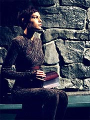
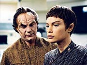

|
MANCHETE
DO EPISDIO
Alegoria
baseada na crise da Aids
tenta levar srie s origens clssicas
Episdio
anterior | Prximo
episdio
Sinopse:
Enquanto a Enterprise ruma para um planeta em que o Programa de Intercmbio Interespcies est realizando uma conferncia mdica, Phlox diz a T'Pol que ela precisa de tratamento para uma condio mdica conhecida como sndrome Pa'nar, ou poder sucumbir e morrer.
Phlox diz primeiro-oficial que ele poderia ir ao planeta e obter pesquisa mdica recente com o grupo Vulcano. T'Pol em princpio recusa, mas o doutor garante que conseguiria os dados sem revelar a condio da Vulcana. E o que ele faz. Falando com trs mdicos Vulcanos, ele requisita informaes sobre a sndrome. Ele diz ao trio que h uma doena Denobulana muito similar para a qual no h cura, e um colega de seu planeta natal pediu as ltimas novidades no front de pesquisa Vulcano.
Apesar da argumentao do mdico da Enterprise, os Vulcanos hesitam em ceder os dados de pesquisa, pois consideram a sndrome Pa'nar uma doena ligada a aes no-toleradas em sua sociedade -- o que acabou tornando o estudo pela busca da cura uma atividade de baixa prioridade entre os mdicos Vulcanos. Ainda assim eles dizem que vo considerar o pedido de Phlox.
 Enquanto isso, na Enterprise, a segunda esposa do Denobulano, Feezal, vem a bordo para ajudar Trip a instalar um novo microscpio. Phlox e Feezal no se viam por quatro anos. Quando Archer sugere que eles devem querer passar algum tempo juntos antes de ir trabalhar, Phlox aponta que outra hora ou dia no faro muita diferena.
Os Vulcanos com quem Phlox falou anteriormente vo at a Enterprise para falar pessoalmente com o mdico e com T'Pol sobre a sndrome Pa'nar, embora no saibam que a Vulcana est sofrendo da doena. Eles questionam os dois sobre seu conhecimento da doena e deixam claro que no aprovam Vulcanos que participam dos atos que transmitem a doena -- elos mentais. Eles do a T'Pol um padd para ver se ela reconhece algum dos nomes listados nele. Mas, quando saem, a real razo para o padd revelada: obter amostras de T'Pol para determinar se ela tem ou no a doena.
Na enfermaria, Trip e Feezal comeam a montar o microscpio, e a Denobulana passa a flertar com o engenheiro. Trip fica embarassado por levar cantadas to diretas da esposa de seu mdico.
Depois de ser contatado pelos mdicos Vulcanos, Archer chama Phlox e T'Pol para discutir a situao. Ele critica os dois por no terem revelado a ele a situao mdica da Vulcana, mas T'Pol explica que a doena estigmatizada em sua sociedade, o que a obrigou a manter silncio. Segundo T'Pol, ela contraiu a doena no ano passado, depois que Tolaris e outros Vulcanos rebeldes estiveram visitando a Enterprise. Inabalado, Archer decide ir superfcie pedir a ajuda dos mdicos Vulcanos, mas sem sucesso.
Quando o capito chama T'Pol para dizer que no conseguiu a ajuda, ela diz que o dr. Yuris, um dos trs mdicos que antes haviam estado a bordo da Enterprise, a contatou. A Vulcana vai at o planeta para se encontrar secretamente com ele, e l Yuris d a ela as ltimas pesquisas sobre a sndrome. Ao ser questionado sobre o porqu, o Vulcano revela que faz parte da "minoria" que pode iniciar elos mentais. Ela em contrapartida diz que foi forada a fazer um elo mental, e por isso contraiu a doena. O mdico ento diz que ela deveria contar isso aos Vulcanos, mas ela se recusa.
De volta Enterprise, os avanos de Feezal esto se tornando mais bvios. Trip conta a Malcolm sobre isso e decide revelar a Phlox o que sua mulher anda fazendo. Phlox, por sua vez, fica surpreso ao ver que Trip no quer corresponder aos apelos da Denobulana. Ele lembra Trip que ele se juntou Frota Estelar para aprender sobre novas culturas e que essa era uma boa oportunidade, mas Trip no consegue conciliar o fato de Feezal ser casada com Phlox com essa noo de "explorao".
Os mdicos ento comunicam que T'Pol est sendo destituda de seu cargo na Enterprise e chamada de volta a Vulcano. Mais uma vez furioso, Archer vai ao planeta e exige uma audincia de apelao. Contrariados, mas pressionados pela lei, os mdicos aceitam. Durante a reunio, T'Pol se recusa a revelar que foi contaminada por um elo mental forado, mas Yuris se sente obrigado a salv-la e revela o que ocorreu, tambm revelando que ele faz parte da "minoria".
T'Pol se recusa a confirmar o relato de Yuris, para evitar apoiar o duplo padro usado pelos Vulcanos para tratar as vtimas voluntrias e involuntrias da contaminao. Mas os mdicos acabam acreditando na verso do doutor e T'Pol autorizada a seguir a bordo da Enterprise. Yuris, entretanto, no tem a mesma sorte, e perde sua posio no Conselho Mdico.
Comentrios:
"Stigma" foi aventado como um retorno s origens para
Jornada nas Estrelas, mas o que o episdio faz de melhor demonstrar exatamente o distanciamento hoje vigente entre as razes da franquia e seu estado atual.
Durante a Srie Clssica, Gene Roddenberry decidiu camuflar histrias com relevncia social contempornea em conceitos e enredos ficcionais ambientados no futuro, a fim de poder se expressar e ao mesmo tempo fugir dos censores da rgida rede de TV NBC. Na ocasio, as idias propagadas pela srie estavam frente de seu tempo.
Agora, 36 anos depois, Enterprise se prope novamente a estabelecer um elo com o mundo contemporneo, produzindo um episdio alegrico de um problema atual. Em vez de fugir dos censores, os produtores da srie foram instados pelos executivos a fazer um episdio desse tipo. E o resultado final acabou no sendo particularmente novo ou revolucionrio.
 Ironicamente,
"Stigma" funciona melhor como uma histria ambientada no universo fictcio de Enterprise do que como uma metfora para a crise da Aids/HIV, pertencente aos tempos atuais. No episdio, os produtores acabaram se voltando para um aspecto ultrapassado, para dizer o mnimo, ligado epidemia da Aids: seu elo com a homossexualidade.
No preciso ser nenhum gnio para ver que a "minoria Vulcana" um paralelo da "minoria homossexual" que vitimada pela
sndrome Pa'nar, a "Aids Vulcana". Embora trabalhada com razovel boa-f por parte dos produtores, ainda que de forma no inspirada, a alegoria est totalmente desatualizada com o atual estado da doena.
H 10 ou 15 anos, havia uma forte associao entre Aids e homossexualidade -- quase uma relao de causa e efeito era estabelecida na poca. Naquele perodo, esse episdio acertaria em cheio o problema e faria muito para esclarecer o pblico a respeito da questo. Hoje, a Aids j no mais uma doena ligada aos homossexuais e at o conceito de "grupos de risco" est em crescente desuso. O vrus HIV j se espalhou o suficiente para que a homossexualidade se tornasse fator secundrio na questo.
A ttulo de curiosidade, durante a primeira temporada de A Nova Gerao, David Gerrold props um episdio chamado "Blood and Fire", que serviria justamente como uma alegoria para a Aids e seu elo com a homossexualidade. Na ocasio, o episdio acabou descartado, principalmente em razo de presses do estdio (embora h quem diga que o roteiro de Gerrold era s ruim mesmo). Se
"Stigma" tivesse nascido ali, seria especialmente relevante. Hoje, ele tem pouco a acrescentar.
Pior: ele transmite a noo errada, desatualizada, das questes sociais que envolvem a epidemia da Aids. Ou seja, enquanto campanha de conscientizao promovida pela Viacom, empresa-me da Paramount Pictures,
"Stigma" um desastre.
Felizmente, no esse o parmetro de julgamento que nos interessa. A questo que os fs se fazem a cada episdio , "Esse episdio foi bom, no contexto da srie e do universo de
Jornada nas Estrelas?" E para essa pergunta a resposta bem mais agradvel.
Em "Fusion", Enterprise nos apresentou o estranho conceito de que as unies de mentes so um tabu na sociedade Vulcana -- algo que parece totalmente incoerente com as sries seguintes.
"Stigma" parece apresentar uma explicao razovel para esse tabu, demonstrando o porqu do repdio prtica, tanto em termos culturais como em termos mdicos.
Com a descoberta de uma cura para a sndrome Pa'nar, no difcil imaginar um futuro em que os elos de mentes se tornam comuns e aceitos na sociedade Vulcana. O universo fictcio de
Jornada recupera o sentido perdido em "Fusion" de uma forma crvel, o que muito bom.
A exposio da cultura Vulcana como um todo pode tambm parecer exagerada aqui, mas totalmente coerente com o que vimos desses aliengenas at agora em
Enterprise. H decididamente a idia de mudar a aparncia cultural dessa espcie -- uma mudana que encaro com particular interesse e que ao menos parece ser concilivel (via mais episdios como esse) com o que os Vulcanos dos sculo 23 e 24 acabaro se tornando.
Saindo do quesito enredo, o episdio oferece material interessante para alguns de nossos personagens regulares. Archer mostra a cada dia mais confiana e capacidade no comando da Enterprise, e Phlox tem a chance de apresentar suas duas facetas no mesmo segmento -- a de mdico srio e a de alvio cmico.
Alis, a escolha da trama secundria do episdio -- o jogo de seduo de Feezal, uma das esposas de Phlox, com o acanhado engenheiro Trip -- interessante em vrios aspectos. Alm de funcionar por si mesma, graas especialmente ao talento infindvel de Connor Trinneer, ela serve como um eco bem-humorado da trama principal -- ambos lidam, em maior ou menor grau metafrico, com tabus sociais, especialmente vinculados sexualidade.
Trinneer como sempre est no controle absoluto de seu personagem. Mesmo que Trip aqui tenha voltado a ser um acanhado engenheiro do sul dos EUA, em vez de o "lady's man" de outras jornadas, o ator faz do engenheiro algum com quem a audincia pode realmente se identificar e apreciar.
Mas, claro, o grande destaque fica mesmo por conta de T'Pol. Jolene Blalock mais uma vez traz uma bela interpretao da personagem -- que parece brilhar justamente em momentos como esse, em que est prestes a explodir (de um modo todo Vulcano, claro).
Os personagens convidados no me parecem especialmente tocantes. So apenas peas necessrias trama, que pecou mais uma vez pela falta de ousadia. Embora T'Pol termine o episdio ainda doente e a sndrome continue sendo incurvel, o tratamento j far com que a doena seja "esquecvel" pelos produtores durante o restante da srie.
Alm disso, pela terceira vez T'Pol ameaa deixar a Enterprise e acaba permanecendo, tambm pela convenincia de manter o status quo (as ocasies anteriores foram em
"Breaking the Ice" e "Shadows of
P'Jem"). O recurso, que de cara j tinha pouco apelo dramtico (principalmente em razo do j conhecido conservadorismo dos produtores), a essa altura j no tem mais nenhum.
Os valores de produo so, como de costume, excelentes. As tomadas panormicas em CGI do congresso do Programa de Intercmbio Interespcies so, ainda que um pouco falsas, esteticamente agradveis, e algumas tomadas da Enterprise em rbita conseguem realmente trazer novas cores para a mais tradicional cena recorrente de efeitos especiais feita em
Jornada nas Estrelas.
Citaes:
Archer - "You cant dismiss someone just because you dont like the way they conduct their personal life."
("Voc no pode desconsiderar algum s porque no gosta de como ela conduz sua vida pessoal.")
Archer - "Where I come from, everything is open for debate."
("De onde eu venho, tudo est aberto para debate.")
Phlox - "Any man would be a fool to ignore the romantic overtures of healthy Denobulan woman. Dont you find her attractive?"
("Qualquer homem seria um tolo de ignorar o interesse romntico de uma mulher Denobulana saudvel. Voc no a acha atraente?")
Tucker - "Aw sure... I mean, no... shes your wife."
("Aw claro... quer dizer, no... ela sua mulher.")
Phlox - "What does that have to do with it?"
("E o que isso tem a ver?")
Tucker - "Shes your wife?!"
("Ela sua mulher?!")
Phlox - "Oh nonsense. Nonsense! Youre too concerned with human morality. I thought you wanted to learn about new cultures, isnt that why you joined Starfleet?"
("Oh bobagem. Bobagem! Voc est muito preocupado com moralidade humana. Pensei que queria aprender sobre novas culturas, no por isso que voc se juntou Frota Estelar?")
Tucker - "I was taught you never fool around with another mans wife. Dont think Im ever going to change my mind about that."
("Eu aprendi que voc nunca deve mexer com a mulher de outro. No acho que eu v mudar de idia quanto a isso.")
Phlox - "As you wish. Your loss."
("Como preferir. Azar o seu.")
Trivia:
 O episdio foi escrito por Rick Berman e Brannon Braga, como parte da contribuio de Enterprise para a campanha de conscientizao do HIV/Aids promovida pela Viacom, empresa-me da Paramount. " moda da fico cientfica, e mais especificamente na tradio de
Jornada nas Estrelas, decidimos criar a premissa com metforas", disse Berman. "Lidamos com uma situao aliengena, algo que iria transformar a idia toda, a iniciativa toda, em uma viso de um outro ponto de vista."
O episdio foi escrito por Rick Berman e Brannon Braga, como parte da contribuio de Enterprise para a campanha de conscientizao do HIV/Aids promovida pela Viacom, empresa-me da Paramount. " moda da fico cientfica, e mais especificamente na tradio de
Jornada nas Estrelas, decidimos criar a premissa com metforas", disse Berman. "Lidamos com uma situao aliengena, algo que iria transformar a idia toda, a iniciativa toda, em uma viso de um outro ponto de vista."
Michael Ensign j havia interpretado o ministro Krola em "First
Contact", de A Nova Gerao, o embaixador Lojal em "The
Forsaken", de Deep Space Nine, e o bardo em "False
Profits", de Voyager. Jeffrey Hayenga interpretou Orta em
"Ensign Ro" (A Nova Gerao).
O episdio destaca a primeira apario de uma das trs esposas do dr. Phlox, Feezal. Ela a segunda personagem Denobulana a aparecer em
Enterprise.
A filmagem do episdio tomou sete dias, de 12 de novembro a 20 de novembro de 2002.
"Eu acho que muito apropriadamente chamado 'Stigma', porque a doena tem um estigma", disse Jolene Blalock. "Voc sabe, muitas pessoas boas e amveis e solcitas e bem-intencionadas -- elas querem olhar para isso."
"Achamos que seria uma idia interessante se os Vulcanos que fossem capazes de fazer elos de mentes fossem uma minoria e uma minoria estigmatizada", disse o produtor-executivo Brannon Braga. "Porque considerado um ato estranho e ntimo que a sociedade Vulcana no aceita, e tem essa doena terrvel que pode ser transferida por elos de mentes."
"Meu personagem fica chocado que a) isso existe na cultura deles e b) que esses mdicos no querem divulgar informaes sobre isso porque eles querem que desaparea, eles querem ignorar", disse Scott Bakula.
Blalock est feliz de como a srie est tratando a luta de T'Pol como vtima de uma doena como a Aids. "Basicamente falamos de como lidar com isso. Como lidamos ao viver com isso, como lidamos ao tratar disso, e como lidamos com pessoas l fora que preferem ignorar isso? Eu acho que muito sbio, eu acho que um ngulo que no muitas pessoas olham."
Para Scott Bakula, outro fator interessante o uso do famoso 'elo de mentes Vulcano' como propulsor para a histria. "O que timo sobre esse episdio que ele vira do avesso a coisa toda do elo de mentes Vulcano", ele disse. "Vai deixar as pessoas doias. A coisa favorita sobre os Vulcanos, sempre, foi essa habilidade de elo de mentes, e o fato que, em sua origem, no era uma coisa percebida positivamente em Vulcano. uma grande histria a adicionar coleo."
Rick Berman explica mais. "Isso algo que seria diferente na poca de Kirk ou Picard, mas em nosso sculo h definitivamente um estigma contra as pessoas que vo contra os costumes e polticas normais e tentam esse ato emocional e ntimo de elo de mentes."
Para John Billingsley, episdios como "Stigma" so o melhor que h -- alegorias, no melhor estilo da
Srie Clssica. " o que fez da primeira srie um sucesso. Eles falavam de questes contemporneas."
Billingsley diz que Enterprise normalmente no tem um foco social. "Essa srie mais preocupada com ao-aventura. Eles esto tentando atingir a audincia masculina dos 18 aos 35 anos. uma pena de certo modo, jogar com um alvo demogrfico."
Ficha
tcnica:
Escrito por Rick Berman & Brannon
Braga
Direo de David Livingston
Exibido em 05/02/2003
Produo:
040
Elenco:
Scott
Bakula como Jonathan Archer
Jolene Blalock como
T'Pol
John Billingsley
como Phlox
Anthony Montgomery
como Travis Mayweather
Connor Trinneer como
Charlie 'Trip' Tucker III
Dominic Keating como
Malcolm Reed
Linda Park como Hoshi Sato
Elenco convidado:
Melinda Page Hamilton como Feezal
Michael Ensign como dr. Oratt
Bob Morrisey como dr. Strom
Jeffrey Hayenga como dr. Yuris
Lee Spencer como mdico Vulcano
Episdio
anterior | Prximo
episdio
|